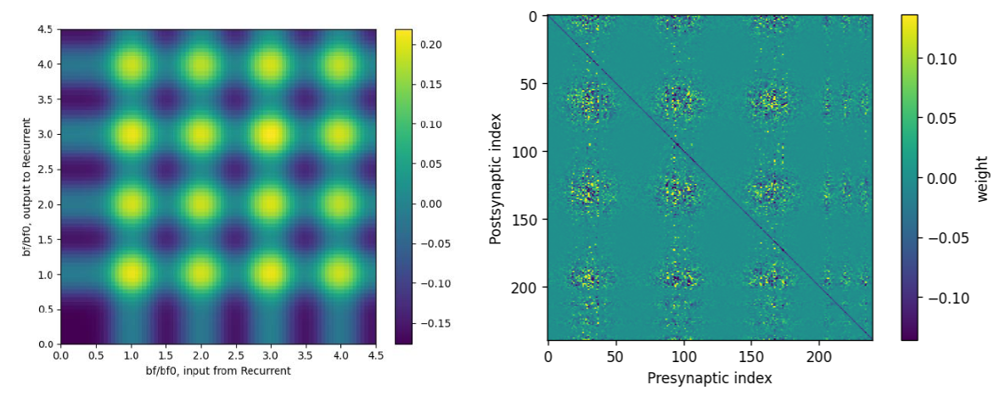

Research Projects
Auditory Ring-Attractor Network
Mechanistic recurrent-network modeling of auditory tuning and harmonicity using spiking neural networks.

Neural Population Dynamics in MT
Analysis of neural population activity using PSTHs and dPCA, followed by an ML model using neural-derived weights for motion classification.

Mechanistic Modeling of Synthetic Circuit-Host Interactions
William & Mary iGEM 2021
Developed and implemented the mechanistic ODE model and associated simulation and dynamical-systems analyses.
Publications
Ma, L., & Patel, M. (2022). Mechanism of carbachol-induced 40 Hz gamma oscillations and the effects of NMDA activation on oscillatory dynamics in a model of the CA3 subfield of the hippocampus. Journal of Theoretical Biology.
Ma, L., & Patel, M. (2021). A Model of Lateral Interactions as the Origin of Multiwhisker Receptive Fields in Rat Barrel Cortex. Journal of Computational Neuroscience.
Links
GitHub | ORCID | Google Scholar | LinkedIn